A variety of physical works, done for fun.
Sushi chef Galeru
A modded Munny (designer toy). Ears, eyebrows and fur were made of Sculpey polymer clay, body was painted with acrylic. Shoes and hat were made with a 3d printer out of PLA.
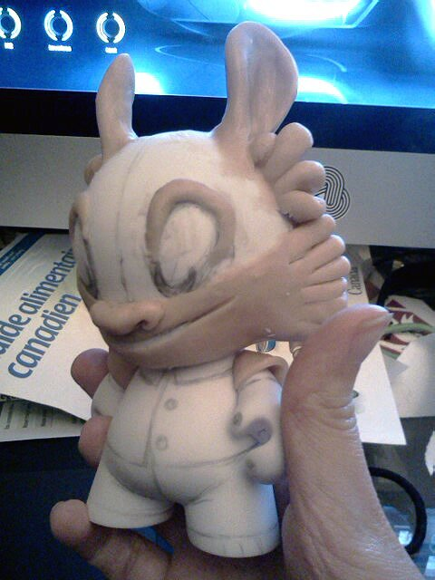I baked it with a make-shift oven. We had a metal file cabinet that I outlined with foil, and pointed a room heater towards it. It worked quite well.
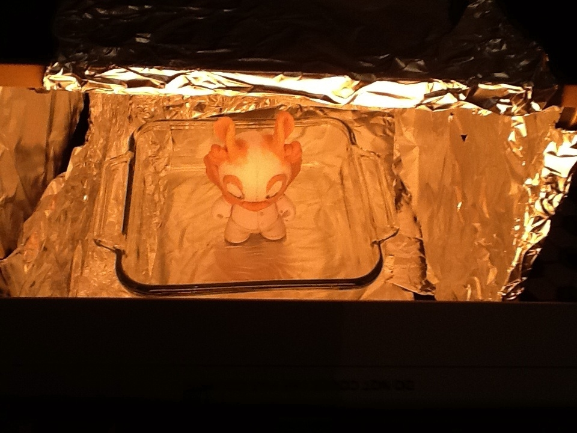 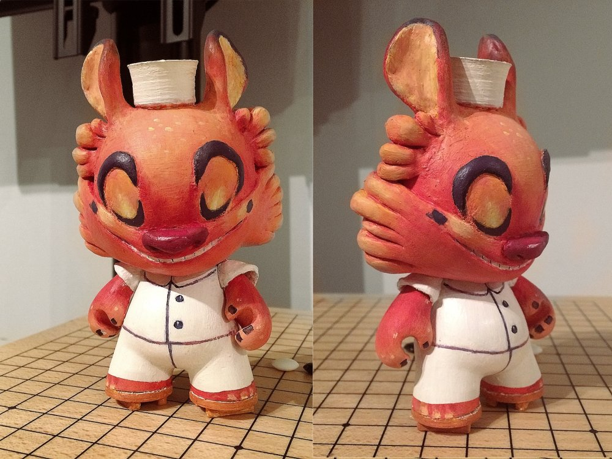Galeru was a fictional digimon I made up, and continued to use in other non-digimon related art. In another universe, Galeru was a sushi chef. Made in 2012.
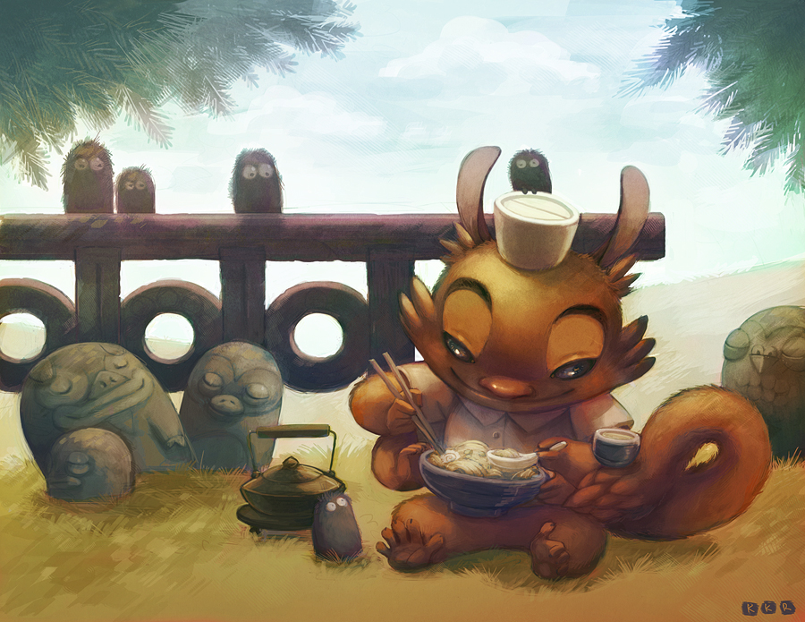Vambit paint
A vambit (see drownspire) custom painted with acrylic into a foo dog.
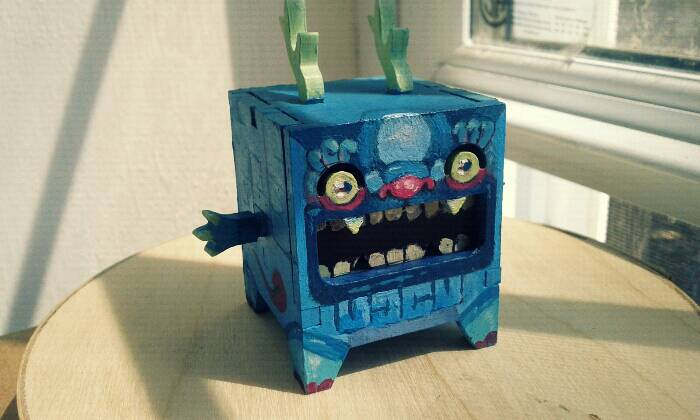Painted
Was really into painting Munnies for a while, this is the second one I'd made. Made in 2009.
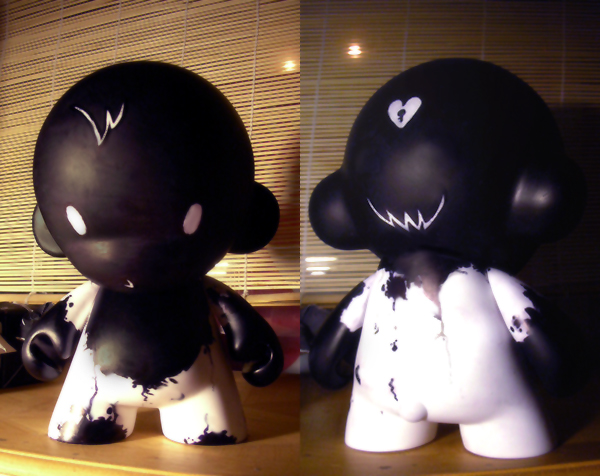Attended Munny Bash in Montreal, and made a Munny with Devine (below).
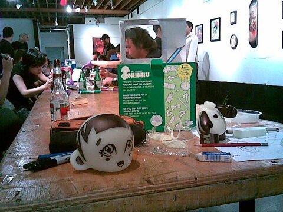Kyoudai
Kyoudai means siblings in Japanese. This is brother and sister, two sculptures that go together. Made in 2008
Made during a time when I liked making physical sculptures out of wooden blocks of equal size, like pixel art. I would glue the blocks together in a specific shape and paint overtop.
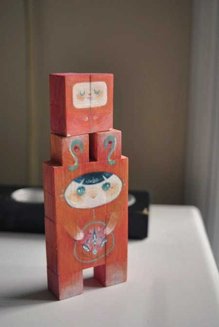 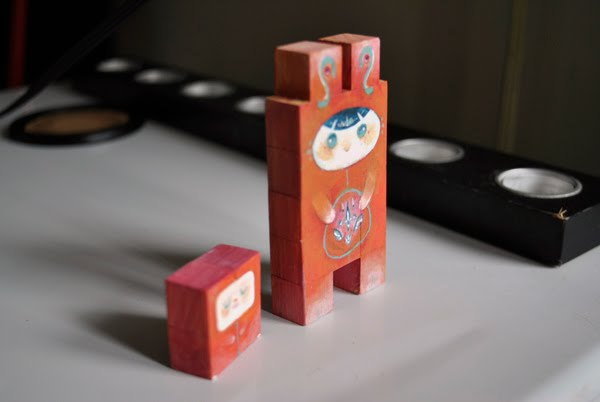Merveilles
A character based out of the Merveilles game made by my partner Devine. Made in 2008.
Made using the same technique as Kyoudai, except that the blocks were stained with paint to get a lighter, more natural color.
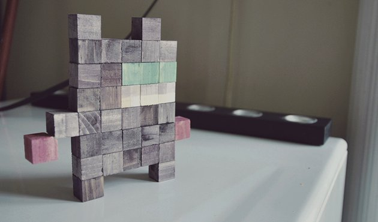I also painted some characters on a wooden board.
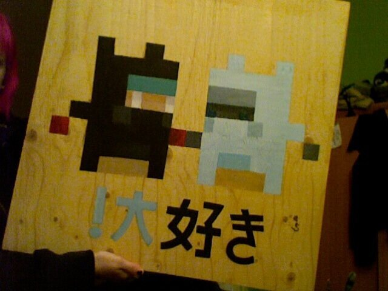Soap monster
Devine's character the soap monster, made out of sculpey polymer clay and painted. Made in 2007.
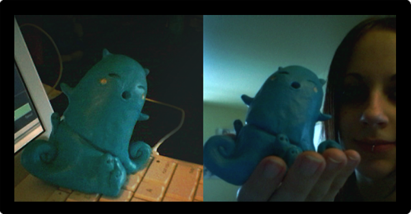Skydoll
A skydoll painting I made for the Skydoll Tribute in Montreal. The painting was displayed at La Gallerie for the event. This is the best photo I've got, sadly. I've got a better one somewhere but I've misplaced it. This was meant more as a picture of our foster cat Shiro than of the painting. He just happened to be sitting on it at the time. Shiro liked to sit by as I painted, swatting at the end of my paintbrush. It's a wonder I was able to finish the painting at all. Acrylic over a wooden board.
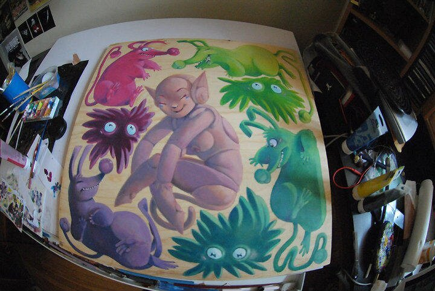Ruelle
I donated time and painted a mural on a wall of La Ruelle d’Hochelaga: le centre de pédiatrie sociale en communauté in Montreal. I drew the outline and the local kids were going to paint it during a special day-long event. The design had to be very simple.
The mural consisted of kids and fish riding waves.
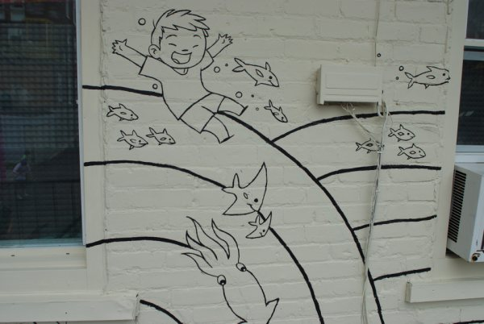 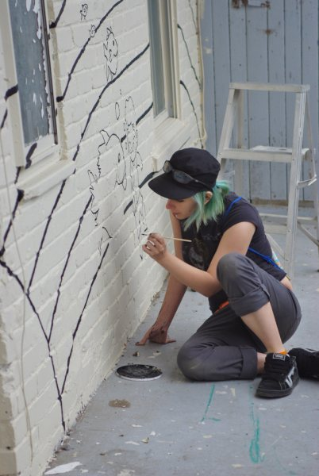World map
A commission I did in 2010 of world map, to be displayed in La Garderie des Petits Voyageurs in Granby, Qc.
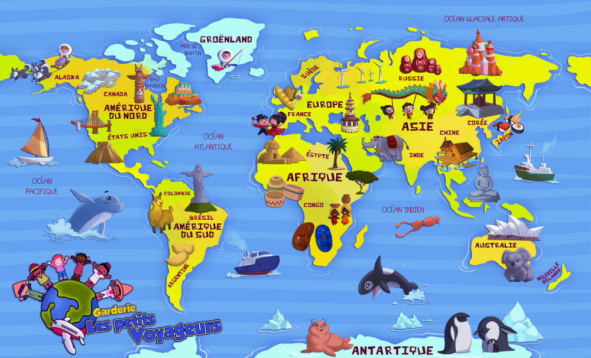 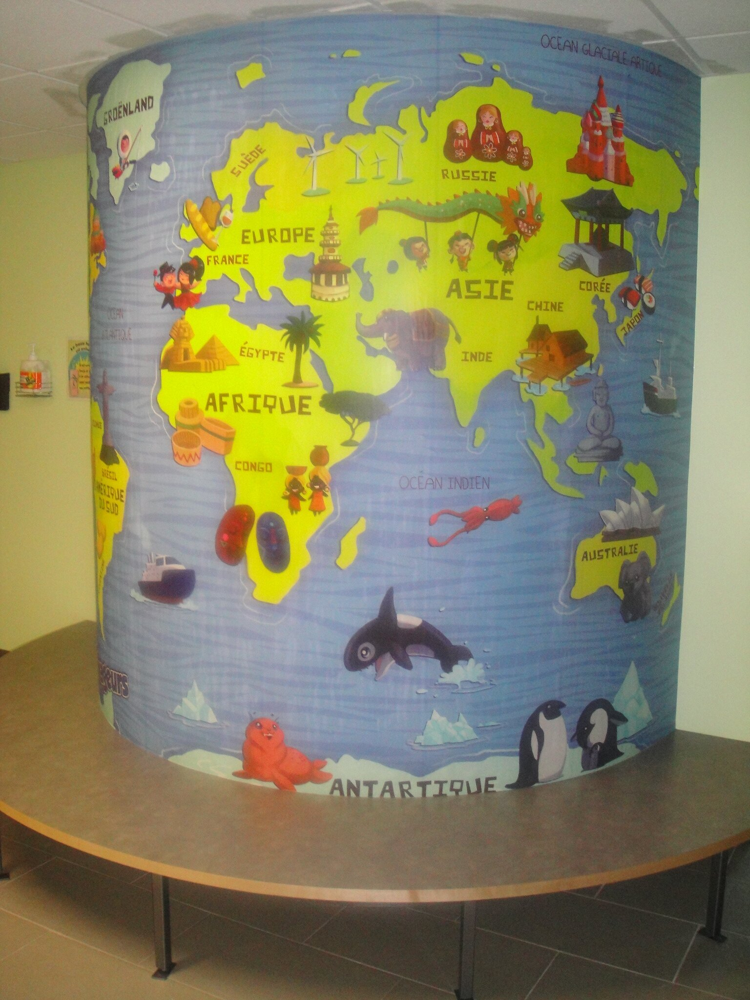